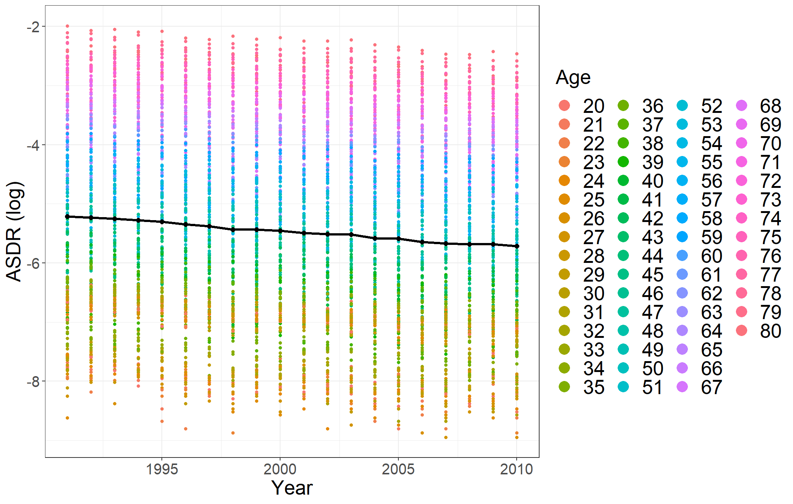
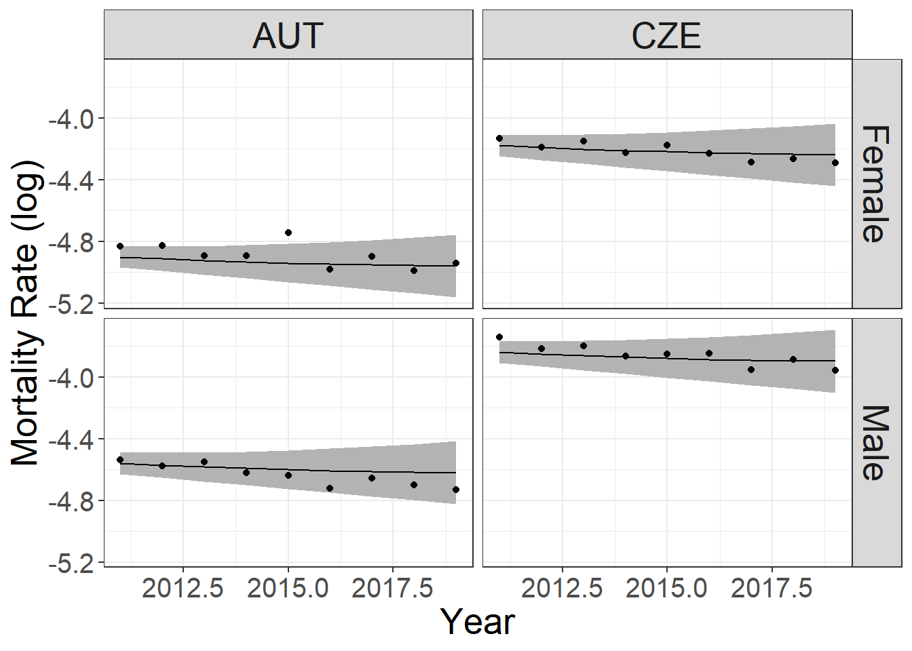

library(data.table) # Efficient data manipulation
library(dplyr) # Data manipulation and transformation
library(ggplot2) # Data visualization
library(HMDHFDplus) # Human Mortality Database-related functions
library(tidyverse) # Collection of tidyverse packages
library(forecast) # Time series forecasting
library(geepack) # Generalized Estimating Equation PackageMortality Modelling using Generalized Estimating Equations
Abstract
This paper presents an application of Generalized Estimating Equations (GEE) for analyzing age-specific death rates (ASDRs), constituting a longitudinal dataset with repeated measurements over time. GEE models, known for their robustness in handling correlated data, offer a reliable solution when individual data records lack independence, thus violating the commonly assumed independence and identically distributed (iid) condition in traditional models. In the context of ASDRs, where correlations emerge among observations within age groups, two distinct GEE models for single and multipopulation ASDRs are introduced, providing robust estimates for regression parameters and their variances. We explore correlation structures, encompassing independence, AR(1), unstructured, and exchangeable structures, offering a comprehensive evaluation of GEE model efficiency in both single and multipopulation ASDRs. We critically examines the strengths and limitations of GEE models, shedding light on their applicability for mortality forecasting. Through detailed model specifications and empirical illustrations, the study contributes to an enhanced understanding of the nuanced capabilities of GEE models in predicting mortality rates.
Keywords: Mortality forecasting, Quasi-likelihood, Generalized estimating equations, Longitudinal analysis, Random walks with drift.
For more details, refer to the related paper: Mortality Modelling using Generalized Estimating Equations:
Affiliation
Department of Mathematics and Statistics, Masaryk University, Kotlářská 2, 611 37 Brno, Czech Republic
Load packages
First, load the packages to be used
Dataset
Importing downloaded datasets from the Human Mortality Database (HMD) website
List of Dataset Filenames
mylistmf<-c(
"AUT.fltper_1x1.txt","CZE.fltper_1x1.txt","AUT.mltper_1x1.txt","CZE.mltper_1x1.txt"
)Importing downloaded datasets of AUT and CZE
# Read and preprocess datasets for selected European countries.
# For each population, a new column 'logmx' is created, representing
# the logarithm of the 'mx' column. Finally, the dataset is filtered
# to include only the years between 1991 and 2019
dat0 <- lapply(c(1:4), function(i) {
data.table::data.table(HMDHFDplus::readHMD(mylistmf[i]))[, logmx := log(mx)][1991 <= Year & Year <= 2019][20<=Age & Age <= 80]
})
# Create matrices (M0) for each population's 'logmx' column.
# Each matrix is of dimensions 59x24, representing the logmx
# values over the years for a specific population.
M0 <- lapply(dat0, function(x) matrix(x$logmx, 29, 61, byrow = TRUE))
# Combine matrices horizontally (column-bind) to form a single matrix (MB0)
MB0 <- do.call(cbind, M0)Construction of ASDRs DataFrame for Training Set
# Subset data
t <- 20
dat <- lapply(dat0, function(x) x[Year <= 2010])
dat$YearNULL# Initialize matrices for training set
M <- lapply(dat, function(x) matrix(x$logmx, t, 61, byrow = TRUE))
MB <- do.call(cbind, M)# Calculate row means
l <- rowMeans(MB)
# Replicate row means
k1 <- rep(l, times = 4*61)
# Create a new vector 'k2' by squaring each element in 'k1'
k2 <- k1^2
gender<-rep(c("Female","Male"),each=t*61,times=2)
Country<-rep(c("AUT","CZE"),each=t*61*2)
# Initialize vectors for training set
year <- rep(unique(dat[[1]]$Year), times = 4*61)
age_levels <- factor(20:80)
age <- rep(20:80, each = t,times=4)
cohort <- year - age
# Combine results into data frame for training set
ASDRs <- data.frame(k1, k2, cohort, y = as.vector(MB),
age,gender,Country,year,
stringsAsFactors = FALSE)
# Convert factors to specified levels
ASDRs$age <- factor(ASDRs$age, levels = age_levels)
ASDRs$agenum<-as.numeric(ASDRs$age)
ASDRs$gender <- factor(ASDRs$gender, levels = c("Female","Male"))
ASDRs$Country <- factor(ASDRs$Country, levels = c("AUT","CZE"))
ASDRs$subject<-interaction(ASDRs$Country,ASDRs$gender,ASDRs$age)# Display the structure of the resulting data frame
str (ASDRs)'data.frame': 4880 obs. of 10 variables:
$ k1 : num -5.21 -5.23 -5.25 -5.28 -5.3 ...
$ k2 : num 27.2 27.4 27.6 27.9 28.1 ...
$ cohort : int 1971 1972 1973 1974 1975 1976 1977 1978 1979 1980 ...
$ y : num -7.82 -7.6 -7.75 -7.85 -7.78 ...
$ age : Factor w/ 61 levels "20","21","22",..: 1 1 1 1 1 1 1 1 1 1 ...
$ gender : Factor w/ 2 levels "Female","Male": 1 1 1 1 1 1 1 1 1 1 ...
$ Country: Factor w/ 2 levels "AUT","CZE": 1 1 1 1 1 1 1 1 1 1 ...
$ year : int 1991 1992 1993 1994 1995 1996 1997 1998 1999 2000 ...
$ agenum : num 1 1 1 1 1 1 1 1 1 1 ...
$ subject: Factor w/ 244 levels "AUT.Female.20",..: 1 1 1 1 1 1 1 1 1 1 ...# Display the first few rows of the resulting data frame
head(ASDRs) k1 k2 cohort y age gender Country year agenum
1 -5.213924 27.18500 1971 -7.824046 20 Female AUT 1991 1
2 -5.231443 27.36799 1972 -7.600902 20 Female AUT 1992 1
3 -5.254734 27.61222 1973 -7.751725 20 Female AUT 1993 1
4 -5.277350 27.85042 1974 -7.849364 20 Female AUT 1994 1
5 -5.303044 28.12227 1975 -7.775256 20 Female AUT 1995 1
6 -5.348752 28.60915 1976 -7.751725 20 Female AUT 1996 1
subject
1 AUT.Female.20
2 AUT.Female.20
3 AUT.Female.20
4 AUT.Female.20
5 AUT.Female.20
6 AUT.Female.20Plot of \(k_t\)
# Create a new data frame ASDRsnw with adjusted Age and year columns
ASDRsnw <- ASDRs %>%
mutate(Age = age) %>%
mutate(year = as.numeric(as.character(year)))
# Plot ASDR and k_t over time with color differentiation based on Age
ggplot(ASDRsnw, aes(year, y, color = Age)) +
geom_point(size = 1.2) +
geom_point(aes(x = year, y = k1), color = "black", size = 2) +
geom_line(aes(x = year, y = k1), color = "black", linewidth = 1.2) +
xlab("Year") + ylab("ASDR (log)") +
theme_bw() +
guides(color = guide_legend(override.aes = list(size = 5))) +
theme(axis.text = element_text(size = 15)) +
theme(legend.text = element_text(size = 20)) +
theme(axis.title = element_text(size = 20)) +
theme(strip.text = element_text(size = 20)) +
theme(legend.title = element_text(size = 20))
Fitting Three GEE Models using the geeglm Function
# Fit GEE model with independence correlation structure
geeInd <- geeglm(y ~ Country+gender+age+
age:k1+
age:k2+
age:cohort,
data = ASDRs,id=subject ,
waves = year, corstr ="independence",
weights = agenum/mean(agenum))
# geeInd
# coef(geeInd)
# vcov(geeInd)
# summary(geeInd)
# coef(summary(geeInd))
anova(geeInd)Analysis of 'Wald statistic' Table
Model: gaussian, link: identity
Response: y
Terms added sequentially (first to last)
Df X2 P(>|Chi|)
Country 1 15 9.538e-05 ***
gender 1 3 0.06371 .
age 60 79569 < 2.2e-16 ***
age:k1 61 43210 < 2.2e-16 ***
age:k2 61 473 < 2.2e-16 ***
age:cohort 61 212 < 2.2e-16 ***
---
Signif. codes: 0 '***' 0.001 '**' 0.01 '*' 0.05 '.' 0.1 ' ' 1# Fit GEE model with exchangeable correlation structure
geeEx<-geeglm(y ~ Country+gender+age+
age:k1+
age:k2+
age:cohort,
data = ASDRs,id=subject ,
waves = year, corstr ="exchangeable",
weights = agenum/mean(agenum))
# geeEx
# coef(geeEx)
# vcov(geeEx)
# summary(geeEx)
# coef(summary(geeEx))
anova(geeEx)Analysis of 'Wald statistic' Table
Model: gaussian, link: identity
Response: y
Terms added sequentially (first to last)
Df X2 P(>|Chi|)
Country 1 15 9.538e-05 ***
gender 1 3 0.06371 .
age 60 79569 < 2.2e-16 ***
age:k1 61 43210 < 2.2e-16 ***
age:k2 61 473 < 2.2e-16 ***
age:cohort 61 212 < 2.2e-16 ***
---
Signif. codes: 0 '***' 0.001 '**' 0.01 '*' 0.05 '.' 0.1 ' ' 1# Fit GEE model with AR(1) correlation structure
geeAr1<-geeglm(y ~ Country+gender+age+
age:k1+
age:k2+
age:cohort,
data = ASDRs,id=subject ,
waves = year, corstr ="ar1",
weights = agenum/mean(agenum))
# geeAr1
# coef(geeAr1)
# vcov(geeAr1)
# summary(geeAr1)
# coef(summary(geeAr1))
anova(geeAr1)Analysis of 'Wald statistic' Table
Model: gaussian, link: identity
Response: y
Terms added sequentially (first to last)
Df X2 P(>|Chi|)
Country 1 16 8.041e-05 ***
gender 1 3 0.06535 .
age 60 80621 < 2.2e-16 ***
age:k1 61 14744 < 2.2e-16 ***
age:k2 61 623 < 2.2e-16 ***
age:cohort 61 268 < 2.2e-16 ***
---
Signif. codes: 0 '***' 0.001 '**' 0.01 '*' 0.05 '.' 0.1 ' ' 1QIC
QIC(geeInd) QIC QICu Quasi Lik CIC params QICC
372.63299 630.44464 -69.22232 117.09417 246.00000 -40135.36701 QIC(geeEx) QIC QICu Quasi Lik CIC params QICC
372.63318 630.44464 -69.22232 117.09427 246.00000 -30255.36682 QIC(geeAr1) QIC QICu Quasi Lik CIC params QICC
623.4594 635.5110 -71.7555 239.9742 246.0000 -30004.5406 ASDRs$fit<-predict(geeEx,ASDRs)Creation of New Dataset for the GEE Model Prediction
# Use random walk with drift to forecast future values of k
k_forecast <- rwf(
l, # Time series data for forecasting
h = 9, # Forecast horizon (next 9 time points)
drift = TRUE, # Include a drift term in the random walk
level = c(80, 95) # Confidence levels for prediction intervals
)
# Repeat the mean forecast values 4*61 times
k1 <- rep(k_forecast$mean[1:9], times = 4*61)
# Create a new vector 'k2' by squaring each element in 'k1'
k2 <- k1^2
# Initialize vectors for test set
t<-9
gender<-rep(c("Female","Male"),each=61*t,times=2)
Country<-rep(c("AUT","CZE"),each=2*61*t)
year <- rep(2011:2019, times = 4*61)
age_levels <- factor(20:80)
age <- rep(20:80, each = 9,times=4)
cohort <- year - age
# Combine results into data frame for test set
newASDRs <- data.frame(k1, k2, cohort,y = as.vector(MB0[21:29,]),
age,gender,Country,year,
stringsAsFactors = FALSE)
# Convert factors to specified levels
newASDRs$age <- factor(newASDRs$age, levels = age_levels)
newASDRs$gender <- factor(newASDRs$gender, levels = c("Female","Male"))
newASDRs$Country <- factor(newASDRs$Country, levels = c("AUT","CZE"))
newASDRs$year <- factor(newASDRs$year, levels = 2011:2019)
newASDRs$subject<-interaction(newASDRs$Country,newASDRs$gender,newASDRs$age)
# Add predictions using the GEE model
newASDRs$pred <- predict(geeEx, newdata = newASDRs)Calculate 95% prediction intervals using the geeEx model on newASDRs
# Generate the model matrix for the GEE model terms on the newASDRs data
model_matrix_gee <- model.matrix(terms(geeEx), newASDRs)
# Calculate the predicted mortality rates based on the GEE model coefficients
newASDRs$predicted_rate_gee <- model_matrix_gee %*% coef(geeEx)
# Calculate the standard errors of the predicted rates
predicted_rate_variance_gee <- diag(model_matrix_gee %*% tcrossprod(geeEx$geese$vbeta, model_matrix_gee))
# Create a data frame to store the results, including lower and upper bounds of the prediction interval
newASDRs <- data.frame(
newASDRs,
lower_bound_gee = newASDRs$predicted_rate_gee - 2 * sqrt(predicted_rate_variance_gee),
upper_bound_gee = newASDRs$predicted_rate_gee + 2 * sqrt(predicted_rate_variance_gee)
)
# Display the head of the new data frame with predicted rates and prediction intervals
head(newASDRs) k1 k2 cohort y age gender Country year subject
1 -5.738638 32.93196 1991 -8.217089 20 Female AUT 2011 AUT.Female.20
2 -5.764873 33.23376 1992 -8.377431 20 Female AUT 2012 AUT.Female.20
3 -5.791109 33.53694 1993 -8.468403 20 Female AUT 2013 AUT.Female.20
4 -5.817345 33.84150 1994 -7.957577 20 Female AUT 2014 AUT.Female.20
5 -5.843580 34.14743 1995 -7.875339 20 Female AUT 2015 AUT.Female.20
6 -5.869816 34.45474 1996 -8.740337 20 Female AUT 2016 AUT.Female.20
pred predicted_rate_gee lower_bound_gee upper_bound_gee
1 -8.137444 -8.137444 -8.394224 -7.880663
2 -8.129043 -8.129043 -8.381943 -7.876143
3 -8.117594 -8.117594 -8.367414 -7.867774
4 -8.103097 -8.103097 -8.350851 -7.855342
5 -8.085551 -8.085551 -8.332476 -7.838626
6 -8.064957 -8.064957 -8.312508 -7.817405Plot predicted mortality rates for age group 65 in the years 2011 to 2019
# Calculate predicted mortality rates for age group 65 in the years 2011 to 2019
# Select the data for age group 65
new_age_65 <- newASDRs[age == "65", ]
# Convert the "year" variable to numeric
new_age_65$year <- as.numeric(as.character(new_age_65$year))
# Rename the columns for clarity
colnames(new_age_65)[8] <- "Year"
# Plotting predicted mortality rates
ggplot(new_age_65, aes(Year, y)) +
geom_ribbon(aes(ymin = lower_bound_gee, ymax = upper_bound_gee), fill = "grey70",
color = "red", linetype = 0) +
geom_point() +
geom_line(aes(Year, pred)) +
facet_grid(gender ~ Country) +
xlab("Year") + ylab("Mortality Rate (log)") +
theme_bw() +
guides(color = guide_legend(override.aes = list(size = 3))) +
theme(axis.text = element_text(size = 15)) +
theme(legend.text = element_text(size = 20)) +
theme(axis.title = element_text(size = 20)) +
theme(strip.text = element_text(size = 20)) +
theme(legend.title = element_text(size = 20))
Evaluating Forecast Accuracy: Mean Squared Error for GEE Model Predictions
# Compute Mean Squared Error (MSE) for GEE Model Forecasting
# Initialize an empty vector to store MSE values
MSE_test_gee <- c()
# Iterate through the 4 data sets of predictions
for (n in 1:4) {
# Extract predicted values for the specific set (9 years, 61 observations each)
gee_predictions <- matrix(newASDRs$pred[(((n - 1) * (9 * 61)) + 1):(n * (9 * 61))], 9, 61, byrow = FALSE)
# Extract actual values for the corresponding set
actual_values <- M0[[n]][21:29,]
# Calculate the residuals (prediction errors)
gee_errors <- actual_values - gee_predictions
# Compute MSE for the set and append to the vector
MSE_test_gee_n <- sum(gee_errors[, 1:61]^2) / (61 * 9)
MSE_test_gee <- append(MSE_test_gee, MSE_test_gee_n)
}
# Display the vector of MSE values
MSE_test_gee[1] 0.06441159 0.06064554 0.03417110 0.02590924